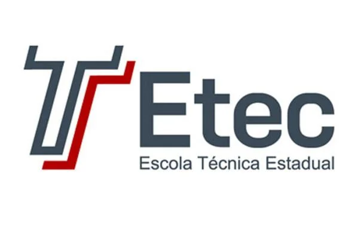

Cursos
Graduação
-
Ciência de Dados
SENAI Paulo Antônio Skaf - São Caetano do Sul
Cursando 1 de 4 Semestres
Técnico
-
Biotecnologia
SENAI Dr. Celso Charuri - Bom Retiro
Concluído
-
Desenvolvimento de Sistemas

Etec da Zona Leste - A.E Carvalho
Concluído
Livres
-
HTML5 e CSS3
Curso em Vídeo
Concluído 4 módulos de 5 -
Web 3.0
SENAI Dr. Celso Charuri - Bom Retiro
20 horas
-
Desvendando a Indústria 4.0
SENAI Dr. Celso Charuri - Bom Retiro
20 horas
-
Desvendando o 5G
SENAI Dr. Celso Charuri - Bom Retiro
15 horas
-
Privacidade e Proteção de Dados (LGPD)
SENAI Dr. Celso Charuri - Bom Retiro
4 horas